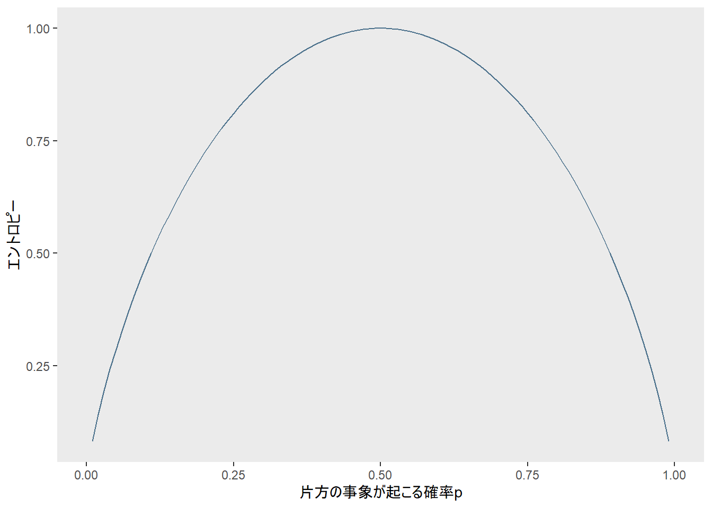
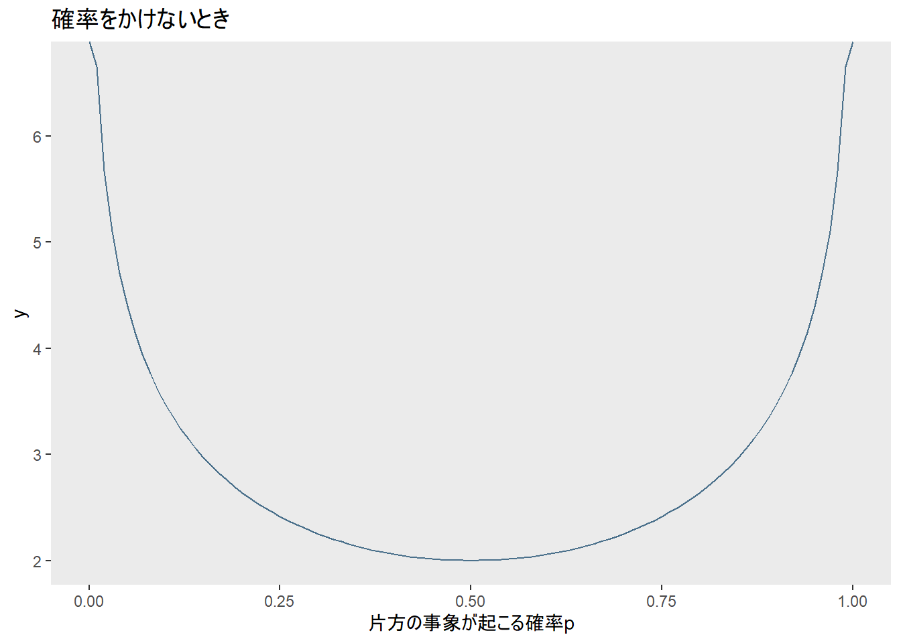
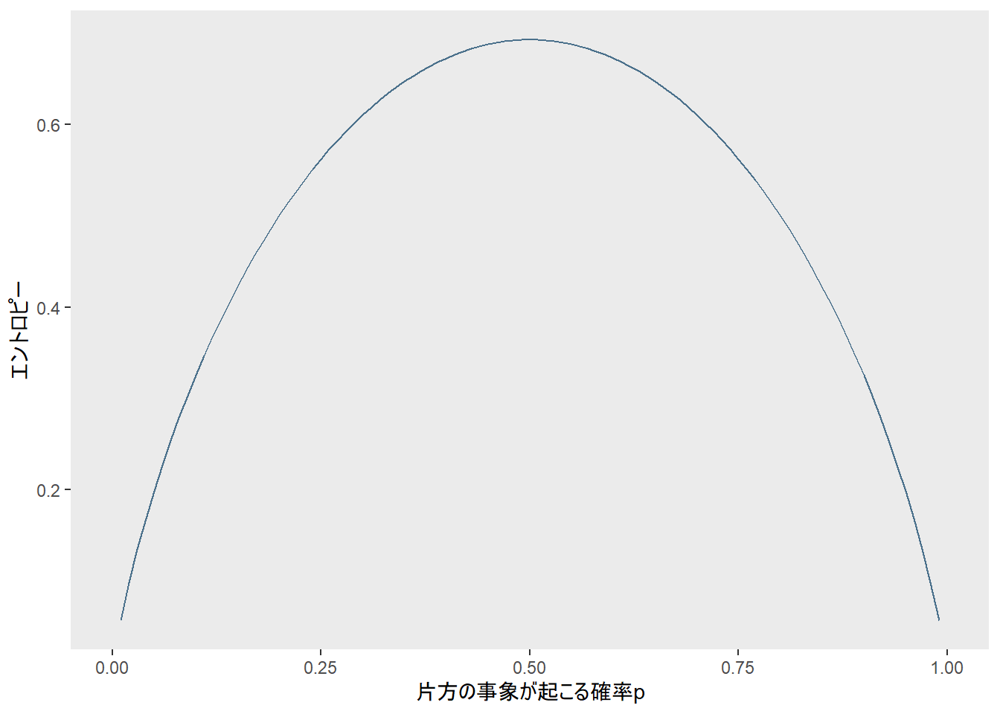

エントロピーにたどり着けない
「社会科学のためのベイズ統計モデリング」第6章を読んでいて、エントロピーにたどり着けなかったので、簡単な例から考えてみることにしました。本の説明にケチをつけているわけではなく、単に自分が突然現れた\(log\)に対応できなかっただけです。
情報量
まず、情報とは「結果を知ることで不確実さが減ること」を示します。この時点でよくわからないので、具体的に考えます。
「雨」か「晴れ」の2種類しか天気が存在しない世界を想像してください（このたとえもよくわからないですね。すみません）。前日の時点では、次の日の天気はまったくわからないので不確実さが大きいわけですが、次の日の朝になったら嫌でも今日の天気がどちらかはわかります。前の日に比べて不確実さが減りました。これが情報です。このような感じで、2つの選択肢 (ありうる事象) の中から1つが選ばれたときの情報量を1ビット、と呼ぶことにします。
晴天・雨天に加えて、「曇り」「雪」という天気が存在するとします。このときの情報量は2ビットです。4つの事象を2つずつのグループに分けてどちらかを選ぶことでまず1ビット、選ばれたグループ内の2つの事象から1つを選ぶことで1ビット、合計2ビットです (だったと思います。ちょっとうろ覚えで書きました)。
2つから1つで1ビット、4つから2つで2ビット、…と順番に並べてみると、\(2^n\)個の中から1つを選ぶときの情報量が\(n\)ビットになることがわかります。
ここで、\(k\)個の事象が起こるときの情報量を考えると
\[k=2^n\]
となって、情報量\(n\)は
\[n=log_2k\]
になります。
\(k\)個の事象が同じ確率で起こるとすると
\[p=\frac{1}{k}\]
なので、\(k=\frac{1}{p}\)と書くことができて、
\[n=log_2\frac{1}{p}\]
となります。これが確率\(p\)で生じる事象が起こるときの情報量になります。
エントロピー
ここまでの話は起こりうる結果が1つのときの話でした。起こりうる結果が2つあって、それぞれ確率\(p\)と確率\(q\)で生じるとすると、情報量はどうなるでしょう？
まず起こりうる事象はこの2つだけなので
\[p+q=1\]
です。各事象の情報量は\(log_2\frac{1}{p}\)と\(log_2\frac{1}{q}\)になります。この2つの結果が起こりうるときの不確かさをエントロピーと呼んで、
\[H=plog_2\frac{1}{p}+qlog_2\frac{1}{q}\]
なんで\(p\)や\(q\)をかけるのかは後述します。まずこの\(H\)を図示したので、見てください。
fun_ent <- function(p) {
p*log2(1/p) + (1-p)*log2(1/(1-p))
}
ggplot2::ggplot(data.frame(x = c(0, 1)), aes(x)) +
ggplot2::stat_function(fun = fun_ent, colour = "skyblue4") +
theme(panel.grid = element_blank()) +
labs(y = "エントロピー",
x = "片方の事象が起こる確率p")## Warning: Removed 2 rows containing missing values (geom_path).
片方の事象が起こる確率\(p\)が0.5、つまり2つのできごとが起こる可能性が五分五分のときにエントロピーが最大になっています。さっきの足し算とかけ算はこのためです。試しに\(p\)や\(q\)をかけるのをやめてみると、こんな感じです。
fun_ent_2 <- function(p) {
log2(1/p) + log2(1/(1-p))
}
ggplot2::ggplot(data.frame(x = c(0, 1)), aes(x)) +
ggplot2::stat_function(fun = fun_ent_2, colour = "skyblue4") +
theme(panel.grid = element_blank()) +
labs(title = "確率をかけないとき",
x = "片方の事象が起こる確率p")
五分五分のときに一番値が小さくなってしまいます。諸事情で五分五分のときの値が一番大きくなるような指標がほしいので、\(p\)と\(q\)をそれぞれ\(log_2\frac{1}{p}\)と\(log_2\frac{1}{q}\)にかけているようです。
エントロピーのグラフでRemoved 2 rows containing missing values (geom_path)となっているのは\(p=0\)と\(p=1\)のときですね。
fun_ent(0)## [1] NaNfun_ent(1)## [1] NaNロピタルの定理より\(lim_{p_i \to 0} p_ilog(p_i)=0\)らしいので、エントロピーを計算するときには\(0log(0)=0\)と仮定するのがよいとMcElreath (2016) には書いてありました。
ちなみに底2ではなく自然対数を使っても形には影響ありません。
fun_ent_3 <- function(p) {
p*log(1/p) + (1-p)*log(1/(1-p))
}
ggplot2::ggplot(data.frame(x = c(0, 1)), aes(x)) +
ggplot2::stat_function(fun = fun_ent_3, colour = "skyblue4") +
theme(panel.grid = element_blank()) +
labs(y = "エントロピー",
x = "片方の事象が起こる確率p")## Warning: Removed 2 rows containing missing values (geom_path).
ここまで来たら「社会科学のためのベイズ統計モデリング」でもエントロピーにたどり着けそうですね。